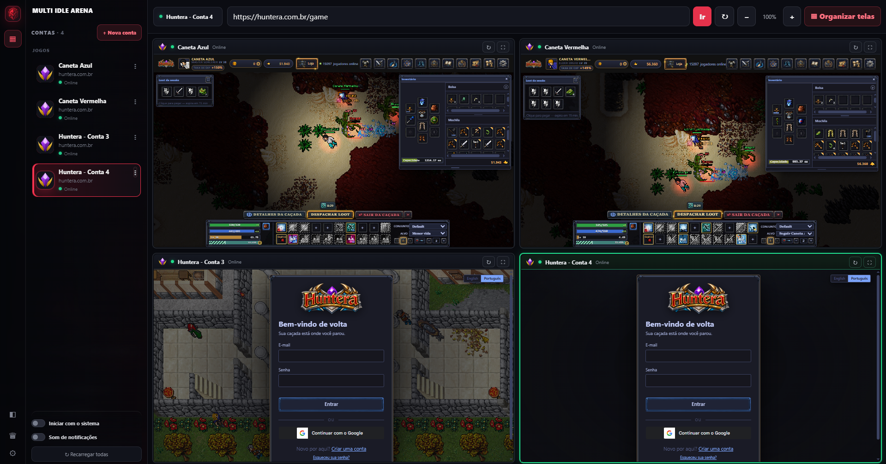

Organização em grade
Visualize várias sessões lado a lado e troque rapidamente entre grade e foco.
Abra, organize e alterne entre múltiplas sessões de jogos de navegador sem espalhar várias janelas pela área de trabalho.

O Multi Idle Arena reúne as sessões em uma interface única e mantém cada conta separada.
Visualize várias sessões lado a lado e troque rapidamente entre grade e foco.
Cada conta mantém sua própria sessão e cookies persistentes.
Selecione uma conta na lateral e leve a sessão desejada para o foco.
Acompanhe indicadores de CPU e memória diretamente no launcher.
Renomeie suas sessões para reconhecer cada personagem ou conta com facilidade.
A imagem ao lado é uma prévia do próprio Multi Idle Arena, com múltiplas contas organizadas na mesma interface.
Enquanto a comunidade cresce, mostramos o que já pode ser comprovado no launcher. Avaliações e números de usuários podem entrar aqui conforme forem reais.
O download é público. Depois de instalar, faça login para validar seu acesso e utilizar o launcher.
Teste o Multi Idle Arena por 8 horas. Se gostar, libere sua conta com um único pagamento — sem mensalidade e sem renovação.
Crie sua conta e conheça o Multi Idle Arena antes de comprar.
Começar teste grátisAcesso permanente, sem mensalidade e sem necessidade de renovação.
Começar agoraNão. O instalador pode ser baixado publicamente. A conta é usada para acessar e validar a licença no launcher.
Não. O launcher foi estruturado para manter sessões persistentes separadas entre as contas adicionadas.
Sim. O Multi Idle Arena possui organização em grade e modo foco para trabalhar com as sessões abertas.
Os planos disponíveis no site podem ser renovados com pagamento via Pix na área da conta.
Organize suas sessões em um launcher feito para multi-conta.